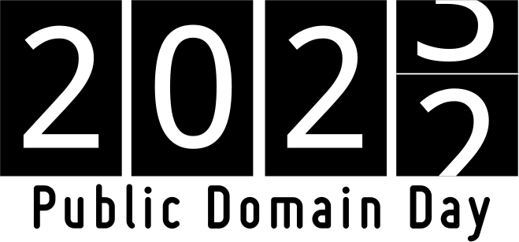
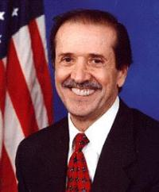

COPYRIGHT Y DOMINIO PÚBLICO
EN ESTADOS UNIDOS
Las leyes de derechos de autor (copyright) otorgan a los creadores de las obras culturales su control absoluto durante un número de años. Pasado ese plazo, las obras culturales pasan al denominado dominio público, en el que quedan a libre disposición de todo el mundo.
Los orígenes - La extensión interminable - Los cambios recientes
Los orígenes
La constitución americana de 1776 otorgó al Congreso la posibilidad de regular los derechos de autor:📝
The Congress shall have power to promote the progress of science and useful arts, by securing for limited times to authors and inventors the exclusive right to their respective writings and discoveries
La primera ley de derechos de autor de Estados Unidos, publicada en 1790, establecía que las obras culturales pasarían a dominio público a los 14 años desde su publicación, plazo que se podía renovar por 14 años más.
La extensión interminable

A lo largo del siglo XX, los tenedores de derechos de autor consiguieron ir alargando el plazo de protección de sus derechos a expensas del dominio público en todo el mundo y particularmente en Estados Unidos.
En1901, una nueva ley de derechos de autor retrasó el paso a dominio público a los 28 años desde su publicación, plazo que se podía renovar por 28 años más.
En 1976, la ley estadounidense se adaptó al convenio de Berna, un acuerdo internacional de protección de derechos de autor que establece los plazos de paso al dominio público en una cantidad de años posterior a la muerte del autor.
La ley de 1976 estableció así un plazo de protección de 50 años tras la muerte del autor, 75 en el caso de obras colectivas, pero además impuso un plazo de 75 años a todo lo publicado entre 1923 y 1978.
De acuerdo con esa ley, las obras posteriores a 1923 irían pasando año a año al dominio público a partir de 1999.
Pero en 1998, el Congreso de Estados Unidos aprobó una nueva ley de extensión de los derechos de autor, firmada por el presidente Bill Clinton, que aumentó los plazos a 70 años tras la muerte del autor, 95 en el caso de obras colectivas, y amplió el plazo a 95 años para todo lo publicado entre 1923 y 1978.
Como consecuencia de esta extensión, en Estados Unidos entre 1978 y 2019 las obras culturales dejaron de pasar al dominio público por expiración de sus derechos de autor (excepto algunos casos particulares).
Los cambios recientes: cal y arena

Tras la confirmación de la ley Bono por parte del Tribunal Supremo, la reacción a esta extensión abusiva de los derechos de autor impulsó la creación de sistemas alternativos como Creative Commons, cada vez más extendidos, que propone esquemas más flexibles de protección de los derechos de autor y facilita la creación, conservación y reutilización de las obras.
La buena noticia es sin duda que en 2018 no se cumplió el riesgo de que una nueva ley extendiera el plazo de protección de derechos de autor. Así desde 2019 se ha podido celebrar en Estados Unidos el 1 de enero de cada año el Public Domain Day, en el que se festejan las obras que pasan por fin a dominio público. Así, en 2023 pasaron al dominio público las obras publicadas en 1927.
Por desgracia, en 2018 el poder de las discográficas consiguió hacer aprobar la Music Modernization Act, firmada por el presidente Donald Trump , que extendió la protección de derechos de autor de las grabaciones musicales anteriores a 1972 un mínimo de 95 años(pero que se extenderá hasta los 110 años en gran parte de los casos).
Información obtenida en la wikipedia
Última modificación: 30 de mayo de 2023